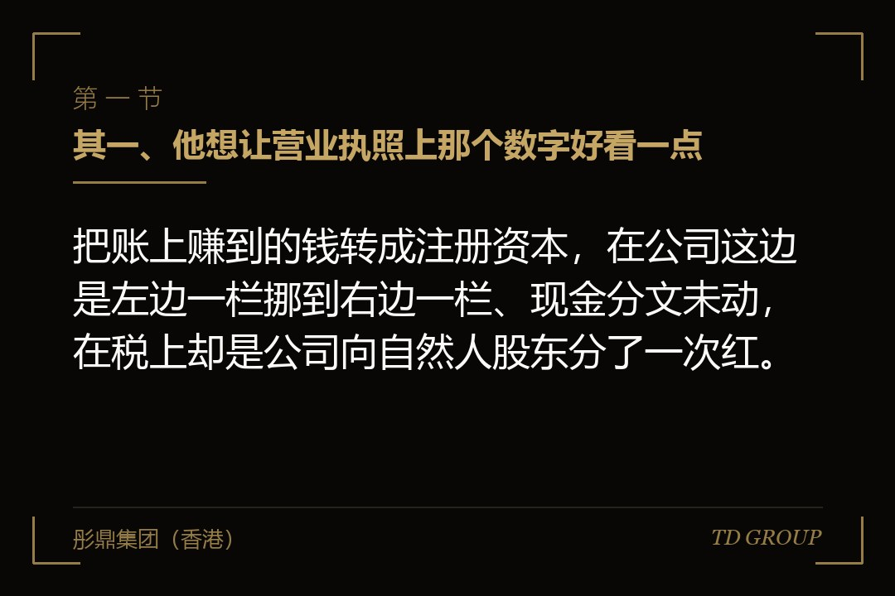
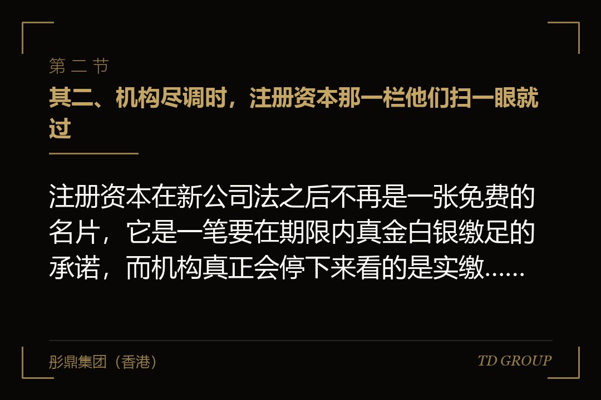
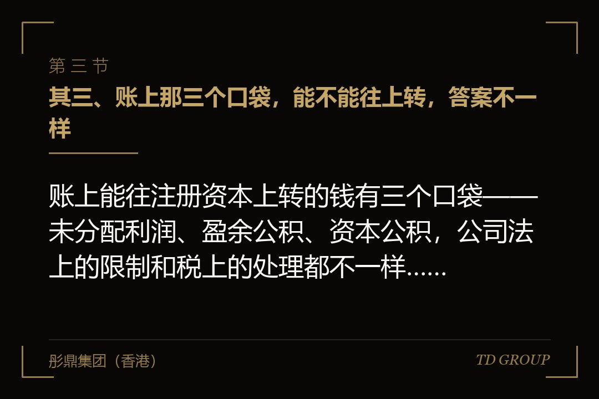

其一、他想让营业执照上那个数字好看一点

结论先行：把账上赚到的钱转成注册资本，在公司这边是左边一栏挪到右边一栏、现金分文未动，在税上却是公司向自然人股东分了一次红。
假设有家做柴油发电机组的公司，去年净利润三千多万，账上历年攒下来的未分配利润有四千多万。今年老板打算见几家机构，年初他跟财务说了一句：把注册资本从五百万做到五千万，执照上那个数字太寒碜了。
财务说这件事能做，程序也不复杂——开股东会、改章程、办变更登记，账上的未分配利润转一部分上去就行。然后她补了半句：不过得先备一笔现金交税，大概七八百万。
老板当场就不明白了。公司账上的钱一分没往外走，他自己也没拿到一分钱，只是把一栏里的数字挪到另一栏，凭什么交税、交给谁、又凭什么是这个数。
这是转增股本上最常见的一次卡壳，而且它多数发生在决议都拟好、变更登记已经排上号之后。真正要紧的不是那笔税本身，是没有人在动手之前替股东算过这一笔——账上的钱是公司的，掏税的手却是股东自己的。
后面几节把这条链一段一段拆开：账上哪几个口袋能往上转、这笔税具体怎么算、谁要掏谁不用掏、哪一类企业可以分期。不过在这些之前，还有一个更靠前的问题得先问一句：那个数字做大之后，他到底换回来了什么。
其二、机构尽调时，注册资本那一栏他们扫一眼就过

结论先行：注册资本在新公司法之后不再是一张免费的名片，它是一笔要在期限内真金白银缴足的承诺，而机构真正会停下来看的是实缴、净资产和经营现金流。
老板想把这个数字做大，理由通常有三个：投标资质表上有一栏要填注册资本、合作方看着安心、以及见投资人的时候不至于被问一句"你们才五百万"。前两个理由是真的，第三个基本是想出来的。
机构做尽调，注册资本那一栏扫一眼就过去了。他们会停下来的是另外几项：实缴了多少、净资产多少、这几年经营性现金流是正是负、利润里有多少压在收不回来的应收上。注册资本是登记数字，那几项才是公司本身。
更要紧的是新公司法带来的变化。有限责任公司全体股东认缴的出资额，要自公司成立之日起五年内缴足；二〇二四年六月三十日之前成立的存量公司有一段过渡期，要在二〇二七年六月三十日前把超过五年的剩余出资期限调整到五年以内。
这一改，注册资本的性质就变了。过去写大它几乎没有代价，写完摆在那儿好看；现在写大多少，就是承诺在期限内实缴多少，缴不上的部分是股东对公司的欠款，公司欠了外债还不上时，债权人可以顺着这条线找到股东。
所以老板真正该问自己的不是"做大到多少好看"，而是"做大之后这笔钱我拿什么缴上去"。转增股本受欢迎恰恰是因为它回答了这个问题：它是拿公司账上已经赚到的钱去缴，落地就是实缴，不留认缴的窟窿。代价就是那笔税。
其三、账上那三个口袋，能不能往上转，答案不一样

结论先行：账上能往注册资本上转的钱有三个口袋——未分配利润、盈余公积、资本公积，公司法上的限制和税上的处理都不一样，动手前先弄清动的是哪一个。
未分配利润是历年赚到、缴过企业所得税、又没有分掉的钱，它是最常被拿来转增的一个口袋，也是税上最贵的一个：转增即视同分配，自然人股东按利息、股息、红利所得缴税。
盈余公积是按规定从利润里提出来留在公司的一块，可以转增，但公司法给了一条硬线：法定公积金转为增加注册资本时，所留存的该项公积金不得少于转增前公司注册资本的百分之二十五。也就是说这个口袋不能掏空。税上它与未分配利润同一档，自然人股东照样要缴。
资本公积是最容易被误会的一个。它不是公司赚来的钱，是股东当年为了取得股权多付的那部分价钱。很多人听说过一句"资本公积转增不征个税"，于是默认自己账上那笔溢价可以免税转上去。
这句话被截短了。不征的那一种，指的是股份制企业以股票发行溢价形成的资本公积转增；而按税务机关的口径，有限责任公司股东增资时形成的资本溢价，不属于那个范围，转增时对自然人股东仍要计征个人所得税。绝大多数还没改制的公司，账上的那笔正是后者。
这里要说一句实在话：这三个口袋不是拿来挑的。公司账上哪一个口袋里有多少钱，是过去这些年的经营和融资留下来的结果，不是今天可以选的选项；而且真正能免的那一档，多数公司根本还没走到。把心思花在"挑一个不用交税的口袋"上，通常的结局是转增做完了、税一分没少，还多耽误两个月。
其四、钱一分没动，税单先到
结论先行：转增当天公司账上现金一分未动、股东手里也没多出一张钞票，但自然人股东的纳税义务当场产生，由公司代扣代缴，而那笔现金要股东自己掏出来。
这是整件事最反直觉的地方。分红的时候，股东先拿到钱再交税，交完手上还剩八成；转增的时候，股东名下的出资额变大了，可那不是能花的钱，税却要按同样的口径交，而且要交现金。
有一道算术，老板可以现在就在心里做一遍：拿你账上的未分配利润，乘上你自己的持股比例，再乘上百分之二十。得出来的那个数，就是你为了让执照上的数字好看，要在今年之内掏出去的现金。
回到前面那家做柴油发电机组的公司。账上四千五百万未分配利润，老板持股七成，全额转增的话，落在他一个人头上的就是四千五百万乘七成再乘两成——六百三十万，一笔实打实要付出去的钱。
而这六百三十万换回来的是什么？是营业执照上那个数字从五百万变成五千万。公司多了一分现金吗，没有。他名下多了一分能花的钱吗，也没有。他名下的出资额从三百五十万变成三千五百万，持股仍然是七成。
多数老板算到这里会重新掂量一遍。要不要做这件事，取决于那个更大的数字究竟能给公司换来什么具体的东西——一张够得着的投标资格、一个原本进不去的供应商名录——而不是"看着体面"。华尔街彤鼎俱乐部里流传过一句话，说的是账上那笔看不见的税：真正贵的从来不是你付出去的钱，是你以为不用付的那笔。
还有一条容易被漏掉：公司是法定的扣缴义务人。也就是说，就算股东自己没准备好这笔钱，代扣代缴这个动作的责任也落在公司头上，做不好是公司的事，不是股东私人的事。
其五、自然人股东和法人股东，完全不是一回事
结论先行：同一次转增，落在自然人股东头上是一笔当场要缴的现金，落在符合条件的法人股东头上则免征企业所得税，还顺带把它那笔股权的计税基础垫高了。
法人股东这一侧的逻辑是这样的：未分配利润与盈余公积转增，对它而言同样视同取得股息红利，而符合条件的居民企业之间的股息、红利等权益性投资收益免征企业所得税，所以这一笔不产生当期税负。
不止不用缴，它还有一层好处。这部分被视同分配的金额，可以相应增加它持有该项股权的计税基础——将来它把这笔股权卖掉的时候，成本那一栏更高，转让所得那一栏就更小。
对照之下，股权溢价形成的资本公积转增就不一样：那一种对法人股东不作为股息红利收入，同时也不允许增加长期股权投资的计税基础，两头都不动。
所以同一份股东会决议，签下去之后每个股东的处境完全不同。个人名字直接写在股东名册上的那几位当场要掏钱；用一家控股公司持股的那几位不用掏，还多了一块将来退出时能抵的成本。
这也解释了为什么很多公司在还没有开始融资的时候，就先把创始人的持股放进一层控股公司——那不是为了这一次转增，是因为往后每一次分红、每一次转增、每一次退出，两种身份的处境都不一样。这件事本身另有一整套代价和限制，此处只点到它存在。
还有一类要单独问：通过有限合伙持股平台间接持股的。合伙企业本身不缴所得税，先分后税穿透到合伙人，而各地对这类转增的具体口径并不完全一致。有这一层的公司，动手之前不要照搬前两段的结论，单独去问一次。
其六、有一档可以分期，但它的门槛写得很死
结论先行：符合条件的中小高新技术企业转增股本，个人股东一次缴纳确有困难的，可在不超过五个公历年度内分期缴纳，但这是把一次性掏钱摊开，不是把税免掉。
这一档的门槛写得相当具体：企业要经认定取得高新技术企业资格，年销售额和资产总额均不超过两亿元、从业人数不超过五百人，并且实行查账征收。四项要一起满足，缺一项就不在这条路上。
程序上是自行制定分期缴税计划，在不超过五个公历年度内分期缴，并把材料报主管税务机关备案——高新技术企业认定证书、股东会或董事会决议、转增股本情况说明、分期缴纳备案表、相关期间的财务报表。
要说清楚的是它的性质：这是缓，不是免。总额一分不少，只是从"今年一次掏六百三十万"变成"分几年掏完"。对现金流紧的公司，这个差别很实在；对以为自己可以不用缴的人，这条路解决不了他的问题。
还有一条边界：上市公司或者在全国中小企业股份转让系统挂牌的企业转增股本，按现行的股息红利差别化政策执行，不适用这条分期的规定。也就是说，这一档是给还没走到那一步的公司留的。
假设有家做工业胶粘剂的公司，拿到过高新资格，员工一百多人，营收一个多亿。它在申报前做了一次大额转增，几位自然人股东把分期备案办了下来，钱按五年摊开——那一年公司的现金流因此没有被这件事咬到。
顺带说一句时间上的常识：分期的口子是转增那个时点去申请的，不是等到几个月后收到催缴通知再回头补办。这件事跟大多数税务安排一样，动作要落在动手的那一刻。
其七、这件事该在什么时候做，或者干脆不做
结论先行：转增股本的成本随着账上未分配利润一起长，而未分配利润是逐年累加的，所以同一件事早做和晚做，差的不是手续，是一笔逐年变大的现金。
先说一个反过来的判断：多数公司这件事该做的时点，不是融资之前，而是它还小的时候。账上只有八百万未分配利润的时候做，自然人股东那一笔按持股比例分下来是几十万；等攒到四五千万再做，同样一个动作要几百万。
融资之前临时起意做这件事，最贵的正是这个原因。老板通常是在见投资人之前的一两个月才想起来，而那个时点恰好是公司账上利润攒得最厚、现金又都排给了别的用途的时候。
融资之后做，还要多一道人。融资完成之后股东会里坐着投资方，而多数股东协议会把注册资本变更、章程修订这类事项列进需要投资方事前书面同意的清单里。转增本身他们未必反对，但流程上要多问一个人，也就多出一段不确定的等待。
所以时点上的顺序是清楚的：能在还没有外部股东、账上利润还不厚的时候顺手做完，成本最低；已经攒厚了的，就要把那笔现金当成一笔真实支出去做预算，而不是当成一次免费的美容。华尔街彤鼎俱乐部里有位做过两轮融资的成员把这件事说得更直白：注册资本是他这些年花过最贵的一笔装修费，而装的是一张纸。
再说"干脆不做"这一档。如果做大的目的只是让执照上的数字好看，那这件事没有必要；如果是为了某一张具体的投标资格或者某个供应商名录的准入门槛，那就先去把那张表拿来，看清楚它要的到底是注册资本还是实缴资本、还是净资产。很多时候要的是后两个，而后两个转增也补不上。
企业主可以先自己答四句话：我账上的未分配利润是多少、我个人直接持股的比例是多少、这两个数乘起来再乘两成是多少、这笔钱我今年拿不拿得出来。四句都答得上来，做不做这件事就已经有答案了。
本质上，转增股本考的不是账务技巧，是老板愿不愿意为一个登记数字支付一笔真实的现金。这笔钱不会因为它没有从公司账上走而变得便宜，只会因为拖着不算而在某一天变得更贵。具体处理以主管税务机关口径和当时有效的规定为准。